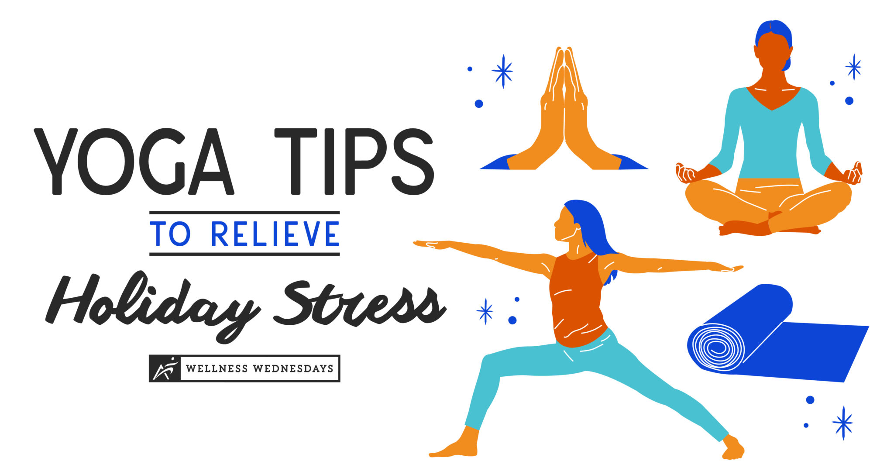

A healthful diet typically includes nutrient-dense foods from all major food groups, including lean proteins, whole grains, healthful fats, and fruits and vegetables of many colors.
Eating health food means replacing foods that contain trans fats, added salt, and sugar with more nutritious options and it also helpful for building strong bones, protecting the heart, preventing disease, and boosting mood.
For more information about the Health tips click on the below Health tips link
Health TipsYoga Tips
Yoga is a type of exercise in which you move your body into various positions in order to become more fit or flexible, to improve your breathing, and to relax your mind.
The art of practicing yoga helps in controlling an individual's mind, body and soul. It brings together physical and mental disciplines to achieve a peaceful body and mind; it helps manage stress and anxiety and keeps you relaxing. It also helps in increasing flexibility, muscle strength and body tone.
For more information about the Yoga tips click on the below Yoga tips link
Yoga Tips